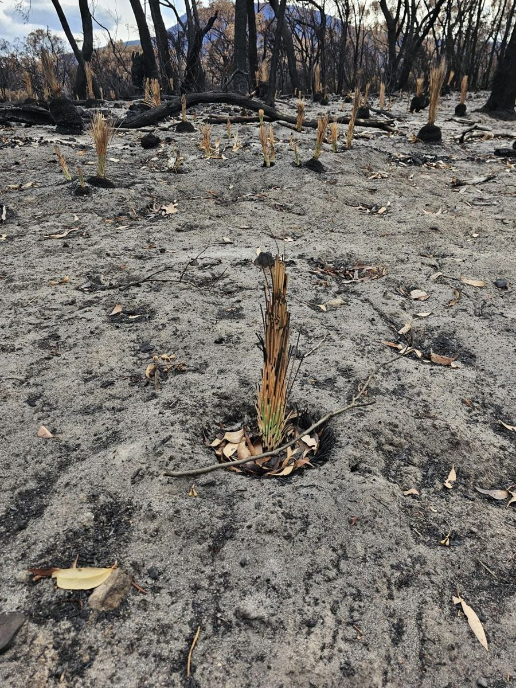
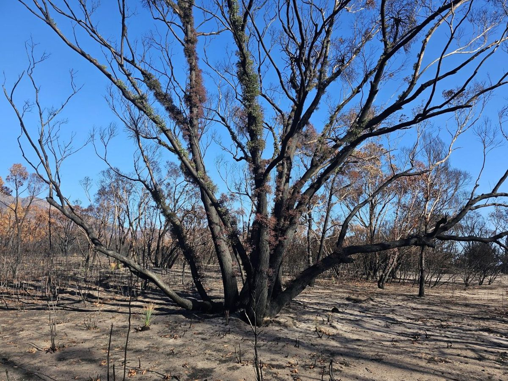
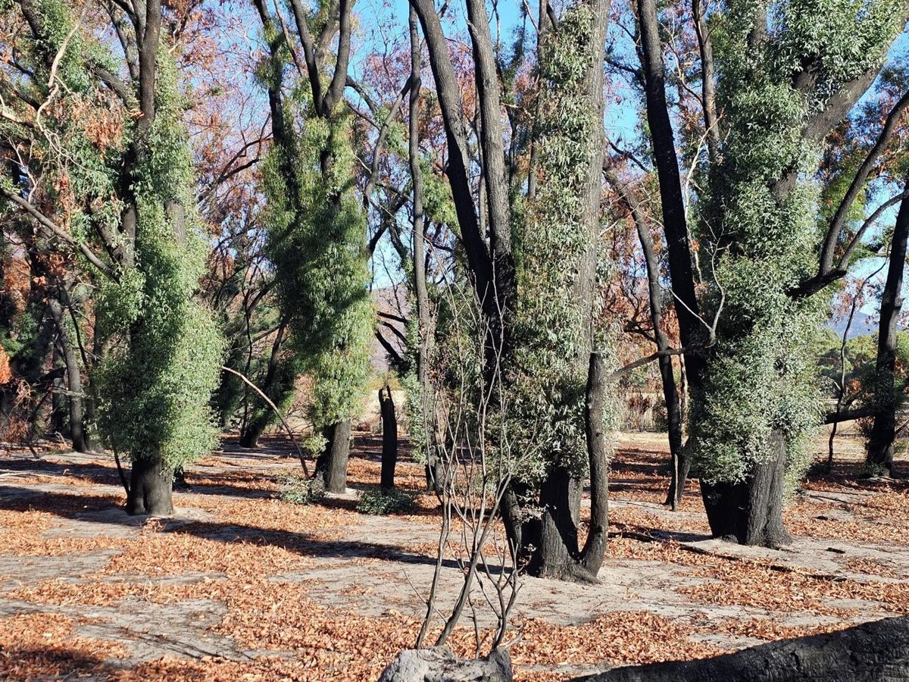
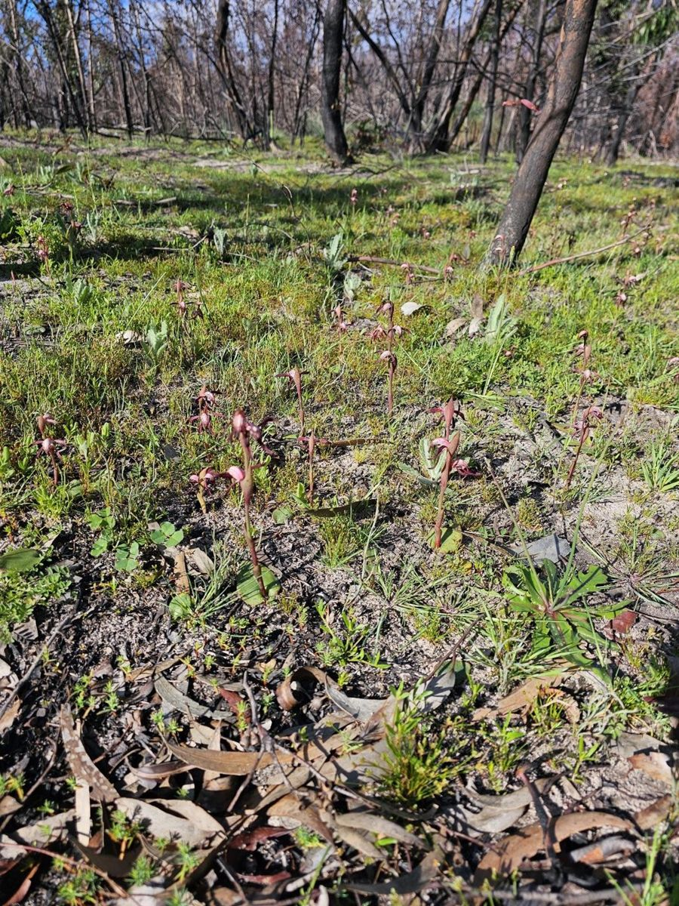

The recovery timeline
Recovery runs in recognisable stages. Knowing which one you are in tells you what you should be seeing, and when the absence of something is worth worrying about.
| Stage | Years | What you see |
|---|---|---|
| Renewal | 0–0.5 | Black, then a green fuzz. Resprouters shoot, grass trees within a fortnight.2 Surviving animals suddenly very visible.3 |
| Juvenile | 0.5–2.5 | Fire ephemerals carpet bare ground and hold soil. Seedlings of obligate seeders appear. Bird diversity still low. |
| Adolescent | 2.5–10 | Shrub layer closing in. Mammals well down but climbing; some peak around ten years.43 |
| Maturity | 10–30 | Second generation of fire-killed plants reaches full size and produces seed properly. |
| Senescence | 20+ | Mammal populations fully recovered. In fire-dependent country, fire is needed again. |
Most of the example block burnt in the 2025 Yarram Gap Road fire. By its second spring, in late 2026, that ground is in the juvenile stage, where fire ephemerals should be carpeting the bare ground and seedlings of the obligate seeders should be showing. The part that escaped last burnt in 2006 and is twenty years into recovery. Your own years since fire are in sections 1.3 and 1.5 of the lookup tool.
A caution about the first six months. You will see more wildlife than usual. That is exposure, not recovery — the survivors have nowhere to hide. Numbers usually fall from here as food and shelter run out and predators find them easy — predation pressure measurably rises once cover is gone. This is when pest control does the most good (section 4.1).567
Birds are slow. After a high-severity fire, bird diversity can stay low for three years or more, so a quiet block in the second year is normal — and in the Grampians heathy woodlands, patchy burns held more species than wildfire did.8 Freshwater invertebrates are quicker: in drought-affected headwater streams, burnt and unburnt creeks carried comparable communities within two to three years.9
Hollows don’t appear on the table. A small one takes 80 to 120 years to form and a large one longer. Fire works on them both ways: it can bring down hollow trees, and it can also open new hollows by burning out old scars and rotten limbs. Either way, the old trees that carry them matter, burnt or not (section 4.5).
Drought first, then browsing pressure, then weeds. Two of the three are things you can act on — the argument of Part 4.710

Weeks
A month
Two months
SpringThe same vantage point at two weeks, four weeks, two months and the following spring.
Source: landholder photo sequence, Pomonal district. Needs sign-off.
The most convincing recovery evidence from this project is not in our data. It is a landholder’s photographs from the same spot at two weeks, four weeks, two months and the following spring.2 Fixing a photo point costs nothing and takes a minute (section 3.1).
One claim left unsourced here: the 80-to-120-year figure for a small hollow to form. The bird and stream-invertebrate claims now cite Kerr and Gully, and Robson and others.
The photo sequence above is from the example block. Its caption says the December 2024 fire, but the state record and the project’s site records give the 2025 Yarram Gap Road fire (January 2025). Confirm the date with the landholder.